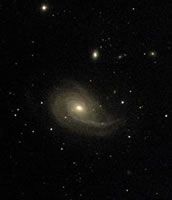

The majority of galaxies show strong symmetries along all three axes. Those that do not are referred to as ‘asymmetrical galaxies’ and tend to exhibit warps and other deviations from circular symmetry.
An asymmetrical galaxy usually results when one galaxy gravitationally interacts with another through either a ‘fly-by’ or a merger event. This interaction disrupts the galaxy (galactic disks are particularly sensitive to such disturbances), and often triggers a burst of new star formation. For this reason, asymmetrical galaxies are typically disk galaxies with high rates of star formation.
Models suggest that once the disturbing influence has gone (i.e. once the fly-by or merger is completed) galaxies settle back to a symmetrical configuration in about 500 million years, and star formation returns to a more normal rate. This makes asymmetrical galaxies transient and relatively rare objects. Even so, asymmetries in galaxies, along with warps, tidal tails and shells provide astronomers with a means to probe both ongoing and recently completed interactions, as well as the dynamics of the galaxies involved.
|

NGC772 (Arp78) is surrounded by a swarm of satellite dwarf galaxies (fuzzy blobs). Its asymmetry was caused through an interaction with one of these satellite galaxies (the bright one immediately above NGC772).
Credit: T. Credner & S. Kohle, AlltheSky.com |